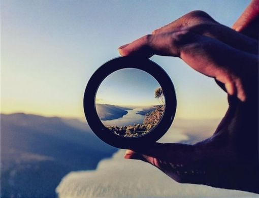
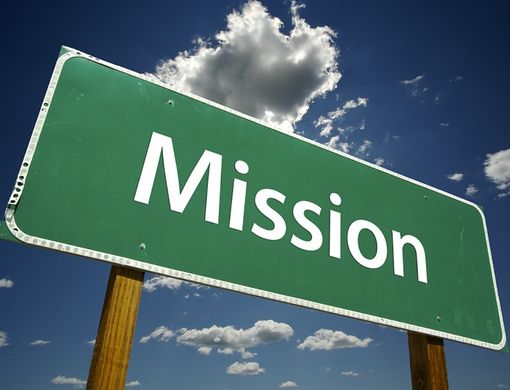
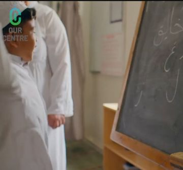
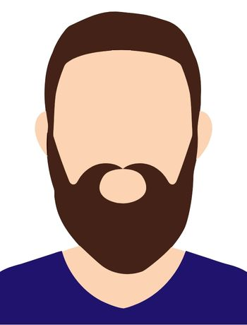
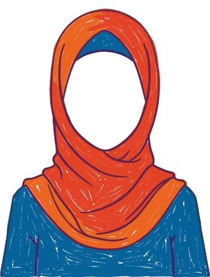

Our Vision
About Our Centre Ltd
Background, Vision, Mission & Leadership
Serving as a central hub for the spiritual, social, and practical needs of the Muslim community in Western Australia.
Background
Why Western Australia Needs Our Centre
The Muslim community has been growing rapidly in Western Australia over the last 30 years. This growth has seen a need for more facilities for the Muslim Community. Places of worship have been established but what is required is more than that.
Our Centre Ltd was established to serve as a central hub for the spiritual, social, and practical needs of the Muslim community. We are progressing toward purchasing land to build a dedicated facility that will host the programs and services our community relies on. Our goal is to provide a trusted place for support, guidance, and development—helping Muslims become confident, positive, and contributing members of society.
Youth Development
A welcoming space for youth to grow spiritually and physically.
Islamic Education
A hub for positive, informed dialogue to promote true Islamic values.
Professional Services
Access to skilled support for community members in need.
Community Facilities
Essential facilities and services dedicated to serving the Muslim community.
Official Our Centre Overview Video (from ourcentre.org.au/about-us/)

Our MissionTo run a Centre that facilitates services that lead to spiritual upliftment of the Muslim community
Our Goals
Complete Breakdown of Our 6 Strategic Goals

1. A Self-sustaining Centre
We aim to create a centre that serves the community while sustaining itself through high-quality, revenue-generating facilities and programs:
- Multipurpose Hall for events, programs and hire
- Indoor Sports Complex (soccer, basketball, racket sports, martial arts)
- Gym facilities for men and women
- Professional media studio & Café / restaurant
- Retail spaces (butcher, grocery, essential community shops)
- Childcare / creche & Aged-care facilities
- Community garden, leisure areas and BBQ facilities

2. Worship Services
We strive to provide spiritually uplifting worship services for every segment of the Muslim community:
- Full-service Masjid accommodating adults, children, families, singles, seniors and those with physical challenges
- Funeral services and janāzah support
- Mosque open days and guided tours
- Special worship programs for Ramadan, youth, families and new Muslims

3. Islamic Education
We are committed to delivering high-quality Islamic learning at every level, for every stage of life:
- Islamic education pathways: basic, intermediate and advanced
- Qur’an learning programs for children, teens and adults
- Classes tailored for women, new Muslims and specific community groups
- Da’wah, education and awareness initiatives
- Modern classrooms designed for interactive learning

4. Self-Improvement Programs
Our Centre aims to nurture personal growth, resilience and holistic wellbeing:
- Counselling services for families, individuals, youth and parents
- Marriage and family support services
- Hijama and wellness consultations
- Youth leadership camps, development programs and recreational activities
- Life-skills workshops, seminars and self-development events
- Sports and recreation programs to promote physical wellbeing

5. High Quality Services
We aim to deliver exceptional services through professionalism, excellence and community focus:
- Purpose-built consultation rooms (counselling, welfare support, marriage services, health therapies)
- Crisis accommodation for those in urgent need
- Well-equipped meeting rooms for community and organisational needs
- High-standard funeral facilities and care
- Safe, accessible spaces designed to support people with special needs
- Reliable administrative and support services across all programs

6. Strong Relationships With the Wider Community
Our Centre is committed to building bridges, creating understanding and serving society with compassion:
- Community outreach programs
- Social welfare and charity initiatives
- Open days, guided tours and interfaith opportunities
- Media and content creation that shares positive, authentic messages about Islam
- Partnerships with local organisations, service providers and community groups
Our Directors
Board of Directors

Sheikh Safdar Parkar
President
Iman Ali Abduallah
Deputy ChairpersonSaiful Islam
TreasurerShoaib Shaikh
SecretaryMahi Taher
DirectorAzmir Siddique
Director